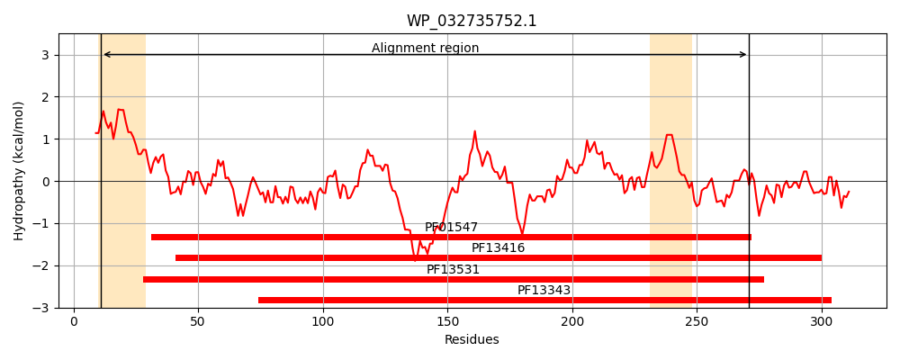
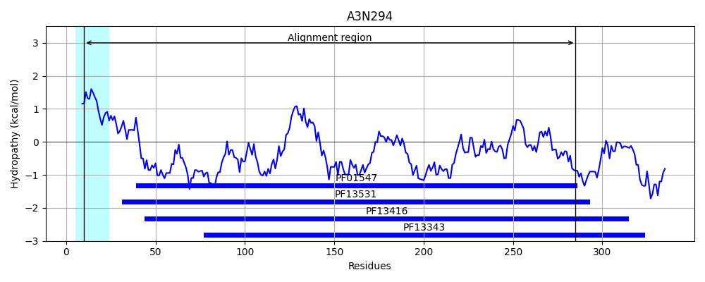
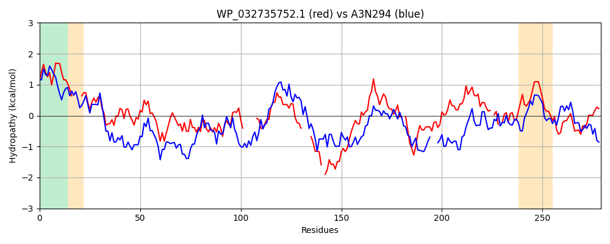

Hit Accession: A3N294
Hit TCID: 3.A.1.20.3
Hit Description: gnl|BL_ORD_ID|348 gnl|TC-DB|A3N294|3.A.1.20.3 ABC-type Fe3+ transport system, periplasmic component OS=Actinobacillus pleuropneumoniae serotype 5b (strain L20) GN=afuA PE=4 SV=1
Mach Len: 279
e:0.000000
Query TMS Count : 2
Hit TMS Count: 1
TMS-Overlap Score: 0.800000
Predicted Substrates:CHEBI:34755;iron(3+)
BLAST Alignment:
Score: 268 , Bit scores: 107 bits, E-value: 6.9e-27, Alignment length: 279, Percentage identity: 30
Query: 11 VVLAMALSAMMLSSAHA----LTVYTAGPGSLAKSLASGFEQQTGVKVTVFQATTGKVMARLEAEQANPQADVLISASWDTAEDLHQRGWLLPFASANADQV------PANLKSADYIAQGVSALGIVWNS----KSGTPE-PKEWRDLTQPAFKDKVTIPDPALSGASLDLLIGLQNSMG-DQAWQLFDDLKKNGMVVSGPNAQAVTPVMQGAKAAVFGAVDYV-SYG-NIQQGESLKVIFPASGTVIAPRPMMILKTSQHADDAKAFIDYVLSPEGQ 271
V A+ + +M SSA L +Y + + ++ A FEQ+ VK + + +G A++EAE+ NPQADV + D + G L + S N DQ+ PA +K A + LG N+ K G + P+ W DLT P K ++ I DP SG + + G D+A+ F L N +S +TP A+ + ++ Y +QG L+++ P GT + ILK +++ D+AK F+D+ LS EGQ
Sbjct: 10 VSTALLGAGLMFSSAAQAKGRLVIYCSATNVMCENAAKTFEQKYDVKTSFIRNGSGSTFAKIEAEKNNPQADVWYGGTLDPQSQAGELGLLEAYRSPNIDQIMPKFQDPAKVKGNLSSAVYIGILGFAVNTERLKKLGIEKIPQCWNDLTDPKLKGEIQIADPQSSGTAYTAIATFAQLWGEDKAFDYFKHLHPN---ISQYTKSGITPARNAARGETTVGIGFLHDYALEKEQGAPLEMVVPCEGTGYELGGVSILKGARNLDNAKLFVDFALSKEGQ 285 | Protein Hydropathy Plots: |
|---|
|  |  |
Pairwise Alignment-Hydropathy Plot:
|
|---|
|  |